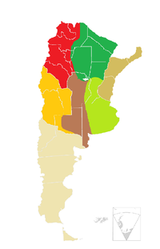
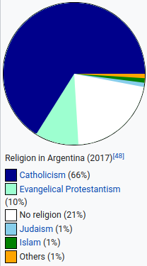

Argentina, officialy known as the Argentin Republic is a country located in the Southern half of South America,
being the largest Spanish-Speaking nation in the world in terms of size and the second largest after Brazil on the continent.
it borders Bolivia and Paraguay to the North, Brazil to the north-east, Uruguay and the South Atlantic Ocean and of course it
shares a large border with Chile to the west, Argentina also claims the Falkland islands from the UK and a piece of Antarctica
past the Drake passage and some more ocean.
Argentina is one of the most biodiverse countries in the world hosting one of the greatest ecosystem varieties in the world:
15 continental zones, 2 marine zones and the Antarctic region are all represented in it's territory
The mainland surface area of Argentina is 2780400km2, the country hosting the highestand lowest points in the Western and Southern
hemispheres. Some of the major rivers are the Parana, Uruguary, which join together to form the Rio de la Plata,
Salado, Negro, Paraguay, Negro, Santa Cruz, Pilcomayo, Bermejo and Colorado. These rivers are discharged into the
Argentine sea. The climate of Argentina is, due to it's size, naturally also diverse however generally the image
bellow can be broken up into: warm, moderate, arid and cold

most people as a side note live in the temperate areas generally while Argentina's climate does vary from subtropical
in the north to polar temperature in the south, this also brings us to:
Demographics
Argentina is considered a country of immigrants, with most of the population having ancestry back to the great
immigration wave to Argentina between 1850 and 1955. Argentina is home to a significant Arab population as well, including
those with partial descent, Arab Argentines number 1.3 million to 3.5 million, mostly of Syrian and Lebannese origin
Argentina also has 4.3% of the population made up of African ethnic groups and there is also an Asian comunity
made up primarily of Chinese and Korean people however a Japanese community also exists since the early 20th century.
Also, interestingly enough, Argentina's population is still growing at an impressive 6/1000 positive change in 2020.
The country has a total population of 45300000 according to 2020 estimates with 20.7% of the population being between
0 and 14 years old, 69.7% being between 15 and 64 years old, and 9.6% being above 65.
Another way to break down the population down, by religion:

Two more things worth noting are: there are also some Ameridian indigenous people of the land and, the distribution of Argentiine population:
Another interesting fact that could count as demographics in 2010 Argentina became the first country in Latin America and
tenth in the world to legalize same-sex marriage.
now that we're done with the boring stuff, let's get to:
interesting stuff
first of all, a few years ago I happened to stumble upon this great Argentine music playlist, so I will share it here
as I still seemingly had it saved. (click on the link to this bellow to get to the playlist.)
okay, now let's get into some fun facts and interesting places:
fun fact : the official national sport of Argentina, Pato used to be about throwing a duck instead of a ball into a basket.
nowadays no ducks are used obviously but the sport continues to exist.
interesting locations:
1. Iguazú Falls
2. Perito Moreno Glacier
3. Recoleta, La Boca, and Tango in Buenos Aires
4. Tierra del Fuego National Park
Romanian/Romana
Argentina
Informatie generala
Steagul Argentinei
Argentina, oficial cunoscuta drept republica Argentina este o tara locata in jumatatea sudica a Americi de Sud,
fiind cea mai mare tara vorbitoare de spaniola in lume in marime si a doua cea mai mare pe continent.
are granite cu Bolivia si Paraguay la nord, Brazilia in nord-est, Uruguay si Sudul Oceanului Atlantic in est si desigur are
o granita mare cu Chile spre vest, Argentina deasemenea considera insulele Falklands de la Marea Britanie si o piesa a Antartici
dupa pasajul Drake si mai mult ocean.
Argentina este una dintre cele mai biodiverse tari din lume si are una dintre cele mai mari variati de ecosisteme din lume:
15 zone continentale, 2 zone marine si o regiune Antarctica sunt toate reprezentate in teritoriul sau.
partea continentala a Argentinei are suprafata de 2780400km2, tara avand cele mai ridicate si scazute puncte in emisferele vestice
si sudice. Unele rauri importante sunt Parana, Uruguary, care se unesc sa formeze Rio de la Plata,
Salado, Negro, Paraguay, Negro, Santa Cruz, Pilcomayo, Bermejo and Colorado. Aceste rauri se varsa in marea
Argentina. Clima Argentinei este datorita marimi sale deasemenea natural diversa desi general imaginea de mai jos
poate fi impartita in: cald, moderat, arid si friguros
majoritatea oamenilor traiesc in zone temperate in general in timp ce clima Argentinei variaza de la subtropical
in nord la temperatura polara in sud, deasemenea asta n-e duce la:
Demografie
Argentina este considerata o tara de imigranti, cu majoritatea populatiei avand origini in marele val de imigratie
spre Argentina intre 1850 si 1955. Argentina deasemenea este casa unei populati semnificative arabe, incluzand
cei cu partiala origine, Argentini Arabi sunt vreo de la 1.3 millioane la 3.5 millioane, in mare parte Lebanezi si Syrieni.
Argentina deasemenea are 4.3% din populatie facuta din cei din grupuri etnice Africane si deasemenea este o comunitate Asiatica
compusa in mare parte din Chinezi si Coreeni, si o comunitate Japoneza exista totusi fiind din prima parte a secolului 20.
Si, interesant, populatia Argentinei inca este in crestere la un poate impresionant 6/1000 crestere pozitiva in 2020.
Tara are o populatie completa de 45300000 comform unei estimari in 2020 cu 20.7% din populatie intre
0 si 14 ani, 69.7% intre 15 si 64 ani, iar 9.6% fiind peste 65 de ani.
Un alt mod de a separa ar fi dupa religie:
Doua alte lucruri de notat ar fi: exista si populatia Ameridiana, nativi teritoriului de dinainte de colonizare si, distribuirea populatiei Argintinei:
Un alt fapt interesant ar putea conta drept faptul ca in 2010 Argentina a devenit prima tara din America Latina
si a 10-a din lume care sa legalizeze maritarea celor de acelasi sex.
acum ca am terminat cu lucruri mai plictisitoare:
lucruri interesante
in primul rand, acum cativa ani s-a intamplat sa gasesc un playlist bun cu muzica din Argentina deci il voi lasa aici
deoarece se pare ca inca il aveam salvat. (apasati pe link(vizionarea primului acest video din playlist pe YouTube)
okay, acum sa intram in niste fapte si locuri interesante:
1: sportul oficial al Argentinei, Pato, obisnuia sa fie despre aruncarea unei rate in locul unei mingi intr-un cos.
In prezent nicio rata nu este folosita de sigur dar sportul continue sa existe intr-o forma mai sigura.